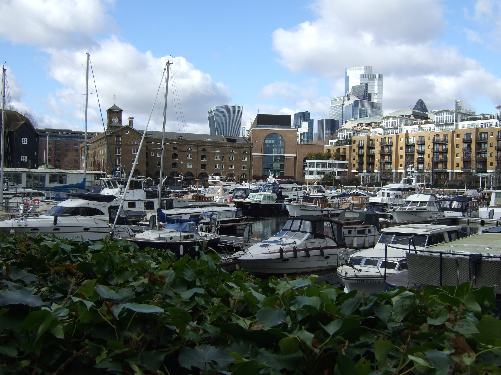

Hi! My name is Oliver Baccay, but you can call me Ollie, and I am a second-year Mathematics student at Northeastern University with a minor in Data Science. I am from Chappaqua, New York, which is a small town about 40 minutes north of New York City. Currently, I have a strong interest in insurance and actuarial science, which involves using mathematical and statistical methods to assess risk in the insurance and finance industries, particularly at their intersection with machine learning and data engineering. I enjoy the applied side of mathematics (e.g. probability, statistics, machine learning), which led me to pursue a minor in data science and learn programming languages such as Python and SQL. Outside of coursework, I continue to grow and challenge myself in clubs such as Generate, where I am a data engineer leveraging my skills in a team of 9 working on a data product for a real client, and The Actuarial Club, where I learn about the actuarial career and get professional tips, including resume and interview advice.
I am excited to apply the skills I've been learning in my coursework and club activities at my internship this summer at Travelers Insurance as an Actuarial Intern and in the fall at John Hancock as an Actuarial Co-op! You can find my past internship experiences and professional updates on my LinkedIn, or feel free to reach out to me at baccay.o@northeastern.edu.